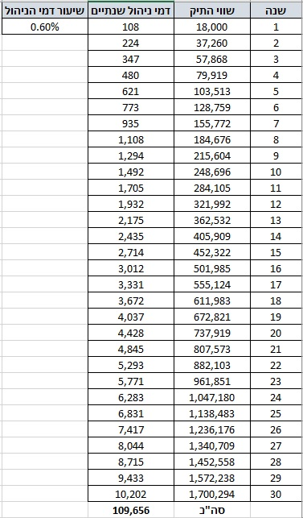

פורסם בתאריך 7.11.2019
התכנים בפוסט זה, כמו כל שאר התכנים בבלוג, הינם תכנים לימודיים במהותם, הם אינם מהווים ייעוץ או המלצה לביצוע פעולה בנייר ערך, ואין לראות בהם תחליף לייעוץ השקעות ו/או ייעוץ פנסיוני המתחשב בצרכיו הייחודיים של כל אדם.
בפוסטים קודמים תיארתי את עשרת הטעויות הנפוצות ביותר של הציבור בטיפול בחסכונות והשקעות, וכן 8 המלצות הרסניות של יועצים פיננסיים ופנסיוניים, שעשויות לגרום לציבור לבצע טעויות פיננסיות קריטיות. בפוסט הזה אני רוצה לקחת צעד אחורה ולבחון מהן התפיסות והנחות היסוד השגויות בקרב הציבור, שמובילות לאותן טעויות, ובפרט להימנעות מהשקעה עצמאית. אז יאללה, בואו ניגש לרשימה:
1. רוב הציבור בארץ לא יודע להשקיע באופן עצמאי: משפט זה נכון מאוד לכשעצמו, הבורות הפיננסית בכלל, ובתחומי ההשקעות בפרט גבוהה מאוד בקרב הציבור בישראל. אבל, ההנחה הרווחת היא שבורות פיננסית היא גזירת גורל, וזה ממש לא המצב! אפשר ללמוד את התחום לבד מבלוגים באינטרנט, ספרים וכיוצ"ב, אפשר גם ללמוד בקורס מרוכז ולקצר תהליכים, אפשר ללמוד מחברים ובני משפחה שכבר ביצעו לימוד ומחקר עצמאי וכו'. בארה"ב למשל השקעה עצמאית בשוק ההון מאוד נפוצה בקרב הציבור הרחב – אז האם האמריקאים יותר חכמים מאיתנו? ודאי שלא, הם פשוט בעלי השכלה פיננסית יותר מפותחת.
2. השקעה זה לא one size fits all ולא ניתן לבנות תמהיל אחיד שמתאים לכל המשקיעים (כמו המסלול ה"כללי" המפורסם). בעצם, חשוב מאוד לכל אחד להבין את מאפייני התשואה והתנודתיות של אפיקי ההשקעה השונים (למשל מניות ואג"חים, אין הכוונה ל"מארז" שמכיל אותם כמו קופ"ג להשקעה, פוליסת חיסכון או מוצר מנוהל אחר). למשל, למשפחה שמעוניינת לרכוש דירה תוך 3 שנים מומלצת חשיפה מנייתית נמוכה מאוד ולמשפחה שרוצה להגדיל את ההון כמה שיותר ב-20 השנים הקרובות מומלצת חשיפה מנייתית גבוהה. גם מי שלא מבין כמעט כלום בהשקעות – חשוב שיבין לכל הפחות את מאפייני התשואה והתנודתיות ואת תמהיל התיק שלו, אפילו אם הכסף שלו מושקע במוצר מנוהל כזה או אחר. למוצרים המנוהלים יש מסלולים שונים, וחשוב להבין כי בחירת תמהיל לא מתאים זו טעות גדולה מאוד – מצד אחד היא יכולה לסכן את סכומי הכסף שנדרשים לשימוש בפרק זמן קצר, ומצד שני היא יכולה פשוט לחרב את התשואה ולפגוע פגיעה משמעותית בעתיד הפיננסי של המשפחה לטווח הארוך.
3. בניגוד לדעה הרווחת, השקעה בתיק עצמאי זה עניין פשוט מאוד. אחרי שסיכמנו שחשוב מאוד להבין את מאפייני התשואה והתנודתיות של אפיקי ההשקעה השונים, ובהתאם לכך לבנות תמהיל תיק שמתאים לצרכים ולמטרות, כל מה שנשאר כדי לבנות תיק עצמאי זה לבחור ניירות ערך מתאימים ולרכוש אותם. למזלנו לא מדובר במדע טילים, וכשלומדים מעט את התחום אפשר לבצע בחירות טובות בהתאם לצרכים שלנו. בכל הנוגע לפרוצדורת הרכישה בפועל של ניירות ערך – זו פעולה פשוטה שאורכת כ-3 דק' וכל מי שאי פעם הזמין מוצר באיביי/אמזון או ביצע איזושהי רכישה טלפונית, יכול גם לרכוש ניירות ערך. שוק ההון נתפס לפעמים כמאיים, אך לא בצדק, ומשקיעים פאסיביים שמבצעים מס' בודד של רכישות כל שנה, יכולים להקדיש לעניין כשעה אחת בלבד במצטבר על פני שנה שלמה.
4. השקעה במדדי מניות היא תנודתית לטווח הקצר-בינוני אבל לטווח הארוך התנודתיות לא מעניינת. רבים חושבים שהשקעה במדדי מניות היא פשוט מסוכנת, ומאפשרת לאבד חלק ניכר מהכסף. זו הסתכלות פשטנית והעובדות הן שירידות הן תמיד זמניות: אם משקיעים ל-5 שנים יש 11% בלבד לסיים עם תשואה שלילית, בהשקעה ל-10 שנים יש רק 5% סיכוי לקבל תשואה שלילית (ולא משמעותית), ומעולם לאורך כל ההיסטוריה כולה לא קרה מצב שהשקעה ל-15 שנה הניבה תשואה שלילית. אם מסתכלים על פרקי זמן ארוכים יותר של כ-20-30 שנה, גם אם נכנסנו לשוק בתזמון אומלל רגע לפני משבר ממושך, אבל החזקנו את ההשקעה למשך 20-30, השגנו בכל מקרה תשואה שקרובה מאוד למוצע הרב-שנתי (שעומד על כ-7% ריאלי במדדי מניות גדולות). בנוסף, השקעה מדורגת (למשל כל חודש במשך שנים, בניגוד להשקעה חד פעמית של סכום כסף גדול) יוצרת מיצוע על פני ציר הזמן ומקטינה דרסטית את התנודתיות. לכן, מי שמכיר את הנתונים ונתקל בירידות במדד מניות מפוזר, מבין שהן זמניות ולא חושש מתרחיש אפוקליפטי של מחיקת תיק ההשקעות, שפשוט לא יכול להתרחש בהשקעה שכזו, אלא אם כן מטאוריט ישמיד 90% מהאנושות או משהו בסגנון. עוד מידע בנושא התנודתיות ניתן לראות בסרטון הזה (החל מ-2:36).
5. בשביל תיק עצמאי לא נדרש הון התחלתי גבוה, אפשר להשקיע החל מכמה אלפי שקלים בודדים.
6. בתיק פרטי לא משלמים דמי ניהול לבית ההשקעות. הבנקים אמנם גובים דמי משמרת, שזו עמלה היסטורית, מיותרת לחלוטין, ושקולה לדמי ניהול, אבל היא לא קיימת בבתי ההשקעות.
7. עמלות קנייה והמרת מט"ח הן עמלות חד פעמיות שחלות על החלק הנרכש בלבד, ועלותן בטלה בשישים מול דמי הניהול במוצר מנוהל, שנגבות מכל התיק, כל שנה. את התפיסה השגויה שהעמלות בתיק פרטי גבוהות מדמי הניהול של תיק מנוהל שמעתי פעמים רבות ע"י מגיבים שונים, והיא לא יכולה להיות רחוקה יותר מהאמת. לכן החלטתי להמחיש לעומק עד כמה היא שגויה באמצעות דוגמא מספרית. הדוגמא שלנו תכלול השקעה של 1,500 ₪ לחודש במשך 30 שנה, בתיק פרטי מצד אחד או במוצר מנוהל דוגמת קופ"ג להשקעה מצד שני. במונחים שנתיים מדובר על השקעה של 18,000 ₪, ונניח שהתיק יצבור תשואה ריאלית של 7% לשנה, כי זו התשואה הממוצעת במדדי מניות כבר 150 שנה, ובכל מקטע של 30 שנה שנבחר לאורך ההיסטוריה נקבל תשואה מאוד קרובה לכך. תחת הנחות אלו התיק יגדל כעבור 30 שנה לכ-1.7 מיליון ₪.
נניח שבתיק הפרטי נשלם עמלת קנייה של 0.15% ובנוסף המרת מט"ח של 0.5%. כיוון שהעמלה נגבית מהסכום הנרכש בלבד, מדובר על 0.65% מ-18,000 בשנה שהם 117 ₪. נוסיף לכך גם דמי ניהול חשבון עצמאי (עוד 180 ₪ לשנה) ונגיע לכמעט 300 ₪ לשנה על עמלות, ובסה"כ כ-9,000 ₪ בלבד לאורך 30 שנה. לעומת זאת, דמי הניהול במוצר מנוהל נגבים מכל התיק, כל שנה. אם נניח דמי ניהול מקובלים של כ-0.6% בשנה, זה אומר שבשנה הראשונה משלמים פחות מאשר בתיק הפרטי (108 ₪), בשנה השנייה עדיין קצת פחות (223 ₪), בשנה השלישית כבר יותר (347 ₪), בשנה העשירית הרבה יותר (1,492 ₪), ובשנה השלושים נשלם כבר לא פחות מ-10,000 ₪! במצטבר משלמים על פני כל התקופה כ-110,000 ₪ בדמי הניהול (!!), לעומת 9,000 בלבד בחשבון הפרטי. אז אנא מכם, אם אתם עדיין חושבים שעמלת קנייה והמרת מט"ח יקרה יותר מדמי הניהול בתיק מנוהל, תחשבו שוב.

8. לאורך השנים תיק פרטי שמושקע במדדי מניות מניב תשואה גבוהה משמעותית מתיק מנוהל במסלול כללי (בו בוחרים רוב המשקיעים) במוצר כזה או אחר, למשל קופ"ג להשקעה. אם נמשיך עם הדוגמא הקודמת – זוג בני 30 שמשקיעים 1,500 ₪ לחודש עד גיל 60 יגיעו לתיק בשווי 1.7 מיליון ₪ (פחות 9,000 ₪ עמלות, כבר ציינתי כמה זה זניח). מועד תחילת ההשקעה שלהם לא ישנה כמעט שום דבר והם צפויים להשיג קרוב מאוד ל-7% ריאלי בממוצע לשנה, אולי קצת יותר ואולי קצת פחות. לעומת זאת, במסלול כללי שמשיג תשואות של כ-4% ריאלי לשנה (או משהו כמו 5.6% נומינלי), הם ישיגו כמיליון ₪ בלבד. הבדל של 70% מצדיק לטעמי להשקיע זמן וללמוד איך להשקיע עצמאית בצורה מוצלחת יותר, אתם לא חושבים?
9. מאיפה נובע פער התשואות הזה של כ-3% לשנה? מכמה גורמים שעליהם כתבתי בהרחבה בפוסט אחר, וכאן אספק תיאור ברמת כותרות, עם הערכה של פער התשואה של כל מרכיב: תמהיל השקעות שמרני מדי, בוודאי לחוסכים צעירים (פער של כ-1.5%), דמי ניהול מיותרים (כ-0.6%) שכוללים לעיתים גם דמי ניהול נסתרים, השקעה מנוהלת שצפוי שתשיג תשואה נמוכה מהמדד במרכיב המנייתי של התיק (כ-0.4%), ומיסוי מיותר על דיבידנדים (כ-0.5%).
10. לא צריך להשקיע במוצר משלם קצבה אם רוצים להגדיל את הקצבה בעת הפרישה. יהיה זה נכון לומר שחלק ניכר בציבור ירצה השלמה לקצבת הפנסיה שלו, במיוחד אם החיסכון הפנסיוני הושקע במסלולים סולידיים לאורך רוב השנים ולא רק בסמוך לפרישה. אבל, מי שחסך כספים בנוסף לפנסיה גם בחשבון הפרטי, יוכל בקלות לייצר לעצמו "קצבה עצמאית" בגובה 3% מהתיק, לשמר את שווי התיק ובמרבית המקרים אפילו לאפשר לו לגדול משמעותית, למרות המשיכות. זה מייתר את הצורך במוצר לא יעיל שיכול לשלם לקצבה כי אפשר לייצר אותה עצמאית. אם נמשיך את הדוגמא הקודמת, מתיק של 1.7 מיליון ₪ שנחסך במשך 30 שנה ע"י השקעה חודשית של 1,500 ₪, ניתן למשוך 51,000 ₪ לשנה, או 4,250 ₪ לחודש. בתור השלמה לקצבת הפנסיה וקצבת הזקנה זה סכום יפה מאוד, וכמובן שמי שחסך והשקיע יותר לאורך השנים יוכל לייצר קצבה עצמאית גבוהה יותר באותו שיעור (על חיסכון של 3,000 לחודש ניתן לייצר "קצבה עצמאית" כפולה של כ-8,500 לחודש, תוך שימור ערך התיק וכנראה גם הגדלתו).
11. על משיכות מהתיק הפרטי לאחר הפרישה נשלם מעט מאוד מס, אם בכלל, מה שהופך מוצרים לא יעילים כמו קופ"ג להשקעה שמאפשרים קצבה פטורה ממס למיותרים. לאחר גיל 60 חבות המס נקבעת לפי מדרגות מס שולי ועד גובה מס רווחי הון, כלומר 10%, 14% 20% ורק אח"כ 25%, וכן ניתן לקזז נק' זיכוי לא מנוצלות. אם נמשיך עם הדוגמא הקודמת – נניח ששני בני הזוג מקבלים קצבה בגובה 5,668 ₪ כ"א מהחיסכון הפנסיוני – הקצבה כולה תהיה פטורה ממס כי הסכום הזה הוא תקרת הפטור ממס על הקצבה למי שפורש אחרי שנת 2025. אם ימשכו בנוסף 51,000 ₪ לשנה מהתיק, אז לא כל הכסף חייב במס כי לא כולו הוא רווח, חלקו הוא הקרן המקורית שלא חייבת במס. אבל אפילו אם נניח שכל הכסף חייב במס, מדובר על כ-25,000 ₪ בשנה לכל אחד מבני הזוג, כל הסכום ייכלל במדרגת ה-10% וכולו יהיה פטור ממס בגלל נק' הזיכוי. כלומר שני בני הזוג יוכלו לקבל 5,668 * 2 עבור קצבאות פנסיה + 4,250 "קצבה עצמאית" + 4,600 קצבאות זקנה = כ-20,000 ₪ לחודש פטורים ממס. נחמד מאוד, לא?
אם חסכו והשקיעו יותר לאורך השנים, הם יוכלו למשוך סכום גבוה משמעותית מהתיק הפרטי בפטור ממס או בחבות מס נמוכה מאוד. למשל, אם חסכו והשקיעו 4,500 ₪ לחודש במקום 1,500 ₪, יגיעו אחרי 30 שנה לתיק ששווה 5.1 מיליון ₪, ממנו יוכלו למשוך כ-153,000 ₪ לשנה, שהם כ-12,750 ₪ לחודש. מדובר על משיכת רווחים של כ-75,000 ש"ח לאדם (לא כל המשיכה היא רווח), עליה משלמים רק 10% מס (7,500 ₪ לאדם), מתוכם כ-6,550 ₪ פטורים בגלל נק' זיכוי (5,900 לגבר ו-7,200 לאישה). לכן סך חבות המס השנתית תהיה כ-1,900 ₪ בלבד, שהם כ-160 ₪ לחודש בלבד (מדובר על כ-1.25% מס מהסכום הנמשך). כלומר בני הזוג יוכלו לקבל עוד 12,590 ₪ נטו כ"קצבה עצמאית" מהתיק הפרטי שלהם.
לסיכום, חשוב מאוד להטיל ספק בהנחות יסוד, כי אפילו אם הן נפוצות זה לא אומר שהן נכונות. חשוב ללמוד את הנתונים האמיתיים, לתכנן את ההתנהלות הפיננסית שלנו בהתאם, ולא להסתמך על אחרים שיעשו את זה בשבילנו.
רוצה לשאול שאלות ולהשתתף בדיון? את/ה מוזמן/ת לפוסט בעמוד הפייסבוק שלנו.
רוצה לקבל סוף כל סוף את כל הכלים והידע הפרקטי כדי להשקיע בקלות וביעילות את כספיך וחסכונותיך? לחץ/י כאן כדי לראות את שירותי ההדרכה והסיוע במימוש השקעות פאסיביות שאנחנו מציעים.